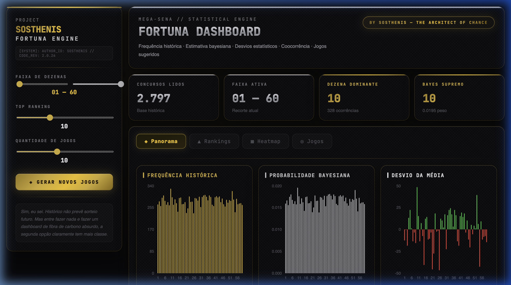
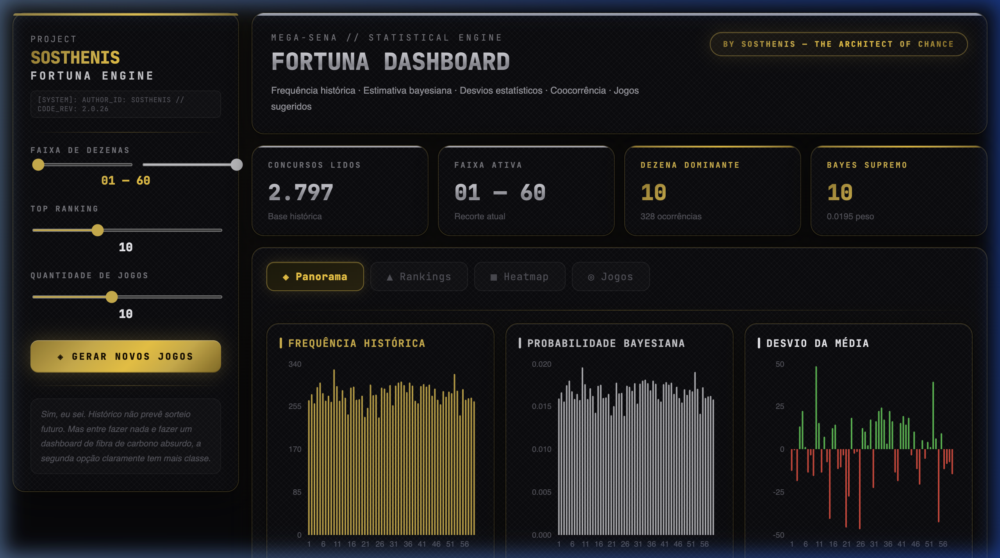
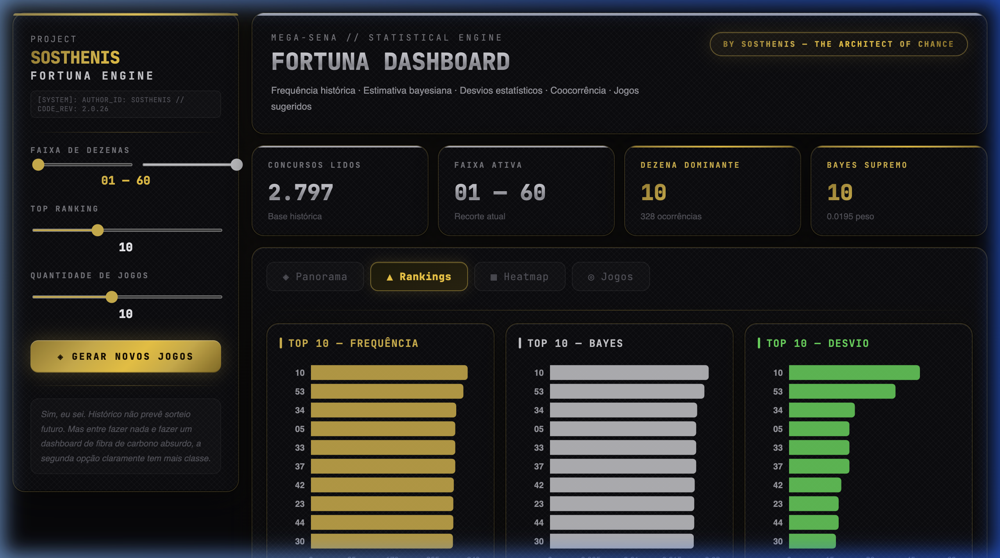
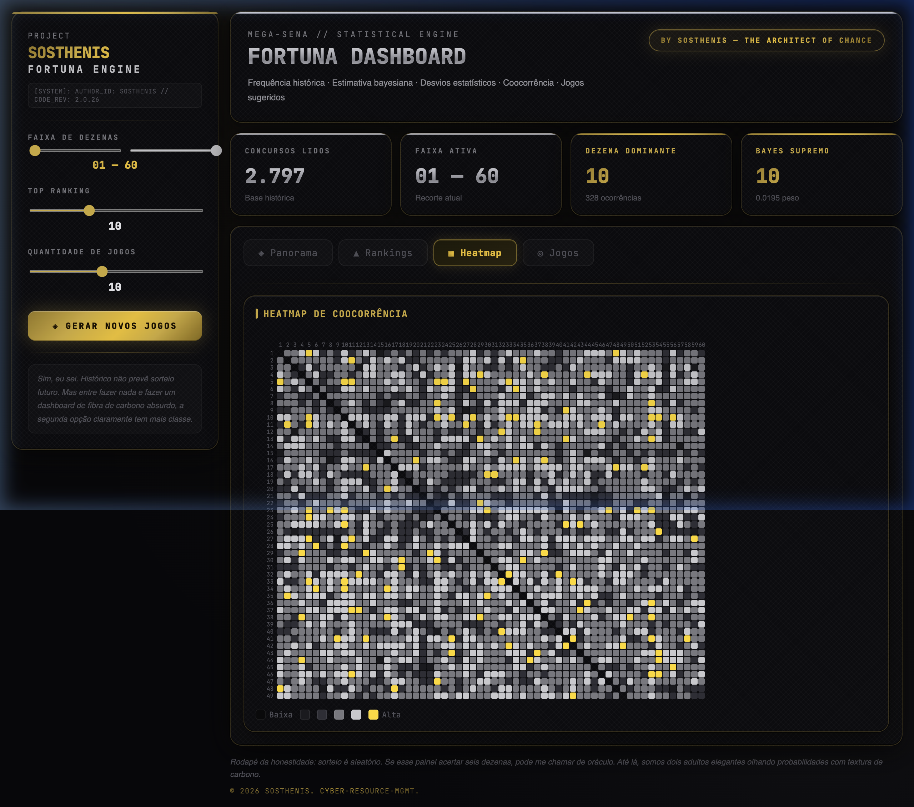
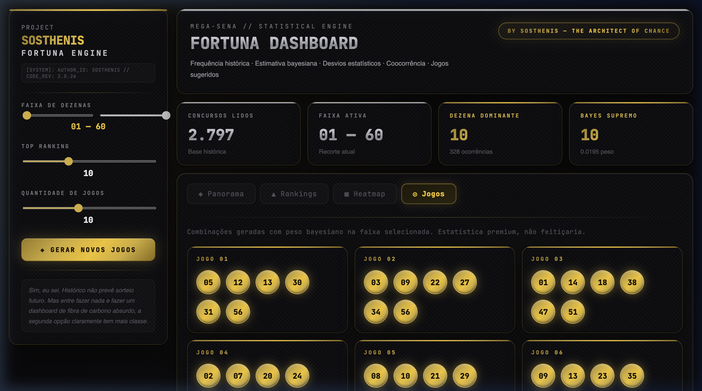

Sumário
Visão Geral
O Fortuna Dashboard é uma aplicação web de análise estatística avançada para os sorteios da Mega-Sena. Ele processa automaticamente mais de 2.700 concursos históricos e apresenta os resultados em gráficos interativos, mapas de calor e um gerador inteligente de combinações.

O que o sistema faz:
- ✅ Analisa a frequência de cada uma das 60 dezenas ao longo de todos os concursos
- ✅ Calcula a probabilidade bayesiana de cada número
- ✅ Identifica desvios estatísticos (números "quentes" e "frios")
- ✅ Mapeia quais pares de números mais aparecem juntos (coocorrência)
- ✅ Gera combinações de jogos ponderadas pela estatística
O que o sistema NÃO faz:
- ❌ Não prevê o futuro. A Mega-Sena é um sorteio aleatório
- ❌ Não garante ganhos. As probabilidades são históricas, não preditivas
- ❌ Não substitui a sorte. É uma ferramenta de análise, não um oráculo
Interface Principal
O dashboard é dividido em duas áreas principais:
| Área | Localização | Função |
|---|---|---|
| Painel Lateral | Esquerda | Controles e configurações |
| Header | Topo direito | Título e badge do autor |
| KPI Cards | Abaixo do header | Métricas resumidas |
| Abas | Centro | Conteúdo principal (gráficos, tabelas, jogos) |
| Rodapé | Inferior | Disclaimer e créditos |
Painel Lateral (Sidebar)
O painel lateral é o centro de comando do dashboard. Ele fica fixo no lado esquerdo e contém todos os controles.

🎚️ Slider: "Faixa de Dezenas"
| Propriedade | Detalhe |
|---|---|
| Controle | Dois cursores deslizantes (mín e máx) |
| Intervalo | De 01 a 60 |
| Padrão | 01 — 60 (todas as dezenas) |
| Restrição | A diferença mínima entre os dois cursores é 5 |
O que faz: Filtra quais dezenas você quer analisar. Se você mover para 10 — 30, todos os gráficos, rankings e jogos só considerarão as dezenas de 10 a 30.
🎚️ Slider: "Top Ranking"
| Propriedade | Detalhe |
|---|---|
| Intervalo | De 5 a 20 |
| Padrão | 10 |
O que faz: Define quantas dezenas aparecem na aba "Rankings". Se estiver em 10, você verá o "Top 10". Se colocar em 15, verá o Top 15.
🎚️ Slider: "Quantidade de Jogos"
| Propriedade | Detalhe |
|---|---|
| Intervalo | De 3 a 20 |
| Padrão | 10 |
O que faz: Define quantas combinações o gerador vai produzir ao clicar em "Gerar Novos Jogos".
🔘 Botão: "◈ GERAR NOVOS JOGOS"
O que faz: Dispara o algoritmo de geração bayesiana. Cada clique produz um novo conjunto de jogos, todos diferentes entre si. Os jogos são baseados nos pesos estatísticos das dezenas dentro da faixa selecionada.
Indicadores KPI
Os quatro cartões no topo da área principal resumem as métricas mais importantes:
| # | Nome | Exemplo | Significado |
|---|---|---|---|
| 1 | Concursos Lidos | 2.797 | Total de sorteios processados da base histórica |
| 2 | Faixa Ativa | 01 — 60 | Qual recorte de dezenas está sendo analisado |
| 3 | Dezena Dominante | 10 (328x) | O número que mais apareceu nos sorteios |
| 4 | Bayes Supremo | 10 (0.0195) | O número com maior peso bayesiano |
Aba Panorama — Os 3 Gráficos
A aba Panorama exibe três gráficos de barras lado a lado:
📊 Frequência Histórica
| Propriedade | Detalhe |
|---|---|
| Eixo X | Dezenas (01 a 60) |
| Eixo Y | Quantidade de vezes sorteada |
| Cor | Dourado (gold) |
O que mostra: A contagem absoluta de quantas vezes cada número apareceu em todos os concursos. Barras mais altas = números mais frequentes.
Como ler: Se a barra do número 10 está no nível 328, isso significa que o número 10 foi sorteado 328 vezes ao longo dos 2.797 concursos.
📊 Probabilidade Bayesiana
| Propriedade | Detalhe |
|---|---|
| Eixo X | Dezenas (01 a 60) |
| Eixo Y | Peso probabilístico (0 a 1) |
| Cor | Prateado (chrome) |
O que mostra: A "chance estimada" de cada dezena, calculada usando o Teorema de Bayes com prior uniforme (alfa = 1). Quanto maior a barra, maior o peso no gerador de jogos.
📊 Desvio da Média
| Propriedade | Detalhe |
|---|---|
| Eixo X | Dezenas (01 a 60) |
| Eixo Y | Desvio em relação à média |
| Barra verde | Acima da média (número "quente") |
| Barra vermelha | Abaixo da média (número "frio") |
O que mostra: Quanto cada dezena se desvia da frequência média esperada. Barras verdes são números que apareceram mais que o esperado; vermelhas indicam o contrário.
Aba Rankings

A aba Rankings mostra três gráficos de barras horizontais com os líderes em cada categoria:
| Ranking | Cor | O que mostra |
|---|---|---|
| Top N — Frequência | Dourado | As N dezenas que mais foram sorteadas |
| Top N — Bayes | Prateado | As N dezenas com maior peso bayesiano |
| Top N — Desvio | Verde | As N dezenas com maior desvio positivo |
O valor de N é controlado pelo slider "Top Ranking" no painel lateral (padrão: 10).
Aba Heatmap de Coocorrência

O que é Coocorrência?
Coocorrência significa "aparecer junto". O heatmap mostra quantas vezes cada par de dezenas foi sorteado no mesmo concurso.
Como ler o Heatmap
É uma matriz quadrada onde o eixo X e o eixo Y representam dezenas. Cada célula mostra a intensidade com que aquele par apareceu junto:
| Cor da célula | Significado |
|---|---|
| ⬛ Preto escuro | Coocorrência baixa (raro aparecerem juntos) |
| ⬛ Cinza escuro | Abaixo da média |
| ◻️ Cinza médio | Na média |
| ◻️ Cinza claro | Acima da média |
| 🟡 Dourado brilhante | Coocorrência máxima! |
Aba Jogos — Gerador Bayesiano

Como funciona o Gerador
- O sistema calcula a probabilidade bayesiana de cada dezena na faixa selecionada
- As probabilidades são normalizadas (somam 100%)
- Para cada jogo, sorteia 6 números usando amostragem ponderada
- Cada jogo é único — o sistema garante que não haja duplicatas
Algoritmo passo a passo:
1. Filtrar dezenas disponíveis pela faixa do slider 2. Normalizar as probabilidades bayesianas 3. Para cada jogo: a. Criar cópia das probabilidades b. Sortear 1ª dezena (ponderada) c. Remover a dezena escolhida do pool d. Recalcular soma das probabilidades restantes e. Repetir até ter 6 dezenas f. Ordenar as 6 dezenas em ordem crescente 4. Verificar se o jogo é único 5. Repetir até ter N jogos únicos
Controles que afetam os Jogos:
| Controle | Efeito |
|---|---|
| Slider "Faixa de Dezenas" | Restringe quais números podem ser escolhidos |
| Slider "Quantidade de Jogos" | Define quantos jogos serão gerados (3 a 20) |
| Botão "Gerar Novos Jogos" | Executa o algoritmo e mostra novos resultados |
A Matemática por Trás
Esta seção explica as fórmulas e conceitos estatísticos do Fortuna Dashboard.
9.1 Frequência Absoluta
A métrica mais simples: contar quantas vezes cada dezena apareceu.
Para cada concurso na base:
Para cada dezena sorteada:
freq[dezena] += 1
Exemplo: Se a dezena 10 apareceu em 328 dos 2.797 concursos, sua frequência absoluta é 328.
9.2 Teorema de Bayes Aplicado
O sistema utiliza uma Estimação Bayesiana com Prior Dirichlet:
posterior[i] = freq[i] + α[i] (onde α = 1 para todas)
posterior[i]
P(i) = ─────────────────────────────
Σ posterior[j] (j=1..60)
Onde:
freq[i]= frequência absoluta da dezena iα[i]= prior (valor 1 para todas → prior uniforme)P(i)= probabilidade estimada da dezena i
Por que Prior = 1?
O valor α = 1 equivale a dizer: "antes de ver qualquer dado, assumo que todas as dezenas têm a mesma chance." É a abordagem mais neutra possível.
Exemplo numérico:
freq[10] = 328 alfa[10] = 1 posterior[10] = 329 soma_posterior ≈ 16.842 P(10) = 329 / 16.842 ≈ 0.01954 Uniforme: 1/60 = 0.01667 → Dezena 10 tem ~17% a mais de peso que a média
9.3 Desvio da Média
total_dezenas = soma de todas as frequências média_esperada = total_dezenas / 60 desvio[i] = freq[i] - média_esperada
- Desvio > 0: Número "quente" — apareceu mais que o esperado
- Desvio < 0: Número "frio" — apareceu menos que o esperado
9.4 Coocorrência (Matriz de Pares)
Para cada concurso:
Para cada par (i, j) de dezenas sorteadas:
cooc[i][j] += 1
cooc[j][i] += 1 // Matriz simétrica
Produz uma matriz 60×60 onde cada célula contém quantas vezes aquele par apareceu junto.
9.5 Amostragem Ponderada (Gerador)
1. Normalizar probabilidades na faixa selecionada 2. Para cada número a escolher: a. Gerar r aleatório entre 0 e soma(probs) b. Acumular probabilidades da esquerda c. Quando acumulado > r → selecionar dezena d. Remover dezena do pool 3. Repetir 6x para completar jogo
Dezenas com maior probabilidade bayesiana têm mais chance de serem incluídas, sem excluir as menos frequentes.
Glossário
| Termo | Definição |
|---|---|
| Dezena | Cada um dos 60 números possíveis na Mega-Sena (01 a 60) |
| Concurso | Um sorteio oficial da Mega-Sena |
| Frequência | Quantas vezes um número foi sorteado |
| Prior | Suposição inicial em estatística bayesiana |
| Posterior | Resultado atualizado após considerar os dados observados |
| Bayesiano | Relativo ao Teorema de Bayes (atualização de crenças com dados) |
| Coocorrência | Frequência com que dois eventos acontecem simultaneamente |
| Heatmap | Mapa de calor — gráfico que usa cores para representar intensidades |
| Amostragem ponderada | Sorteio onde cada opção tem um peso diferente |
| Prior uniforme | Assumir chances iguais para todos antes de ver os dados |
| Desvio | Diferença entre o valor observado e o valor esperado |
| KPI | Key Performance Indicator — indicador-chave de desempenho |
FAQ — Perguntas Frequentes
❓ O sistema prevê qual número vai sair?
Não. A Mega-Sena é um sorteio aleatório com equiprobabilidade. O sistema analisa padrões históricos, mas não há como prever sorteios futuros com base no passado.
❓ Por que usar Bayes se poderia ser só frequência?
A estimação bayesiana é mais robusta: ela evita que dezenas com frequência zero (em recortes menores) tenham probabilidade zero, e produz uma distribuição mais suave e matematicamente elegante.
❓ O heatmap está muito escuro, é normal?
Sim. Com 60 dezenas, existem 1.770 pares possíveis, então a maioria terá valores intermediários. Use o slider "Faixa de Dezenas" para reduzir (ex: 01-20) e ver mais detalhes.
❓ Os jogos gerados são realmente diferentes entre si?
Sim. O sistema usa um Set() para garantir que cada combinação (ordenada) seja única. Se dois jogos iguais forem gerados, o segundo é descartado.
❓ De onde vêm os dados?
Os dados são carregados de um repositório público no GitHub mantido por @guilhermeasn, que compila os resultados oficiais da Caixa em formato JSON.
❓ O sistema funciona offline?
Não na versão atual. Ele precisa baixar os dados do GitHub na primeira carga. Uma vez carregados, ficam na memória do navegador durante a sessão.
❓ Posso usar no celular?
Sim, mas a experiência é otimizada para desktop. O layout com sidebar e gráficos lado a lado funciona melhor em telas maiores.